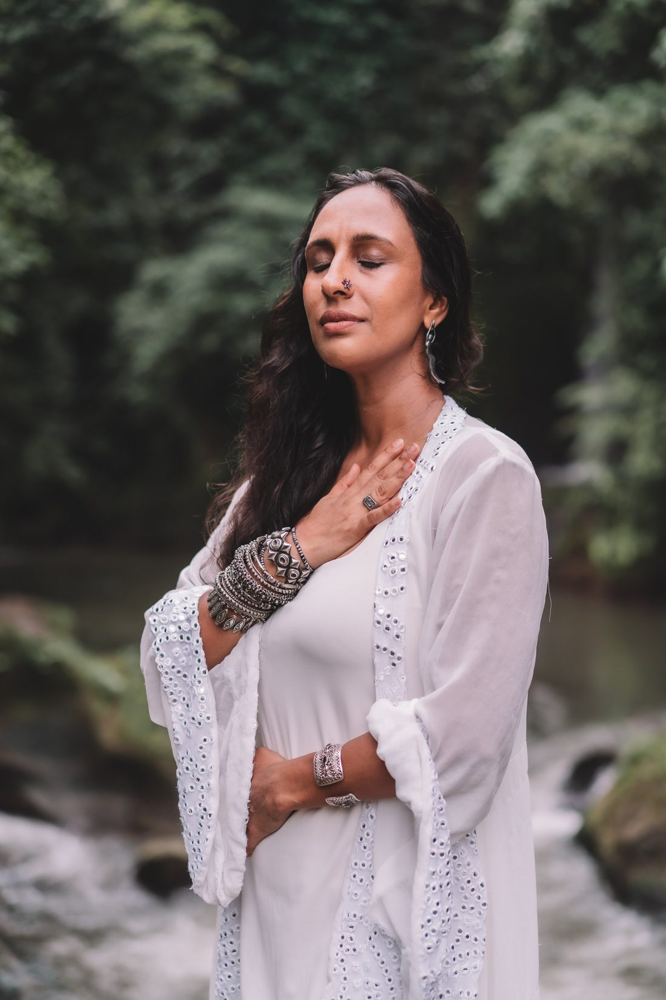

Everyday Goddess · 1:1 for women who lead · 12 sessions · Online
A 12-session 1:1 journey through the nine forms of Durga, for women who lead a company or a team, and a family at home. Through dance, conversation and breathwork, you stop splitting yourself between roles and lead from a full tank: present, clear and trusting your own instincts.
Rolling start: begin when you're ready · Every journey begins with a $35 Connection Call
Is this you?
You run the business or the team reports to you. You're raising children and holding the family together. Your week moves from the boardroom to the school run to your parents and your community, and each one needs a different version of you. When life pulls you in every direction, it is easy to lose your own voice under the noise. You've already invested in coaching, meditation and retreats. They felt good, and then real life took over again.

This is not about becoming a goddess. It is about remembering the one you already are.
Through the nine forms of Durga, we uncover the parts of you that were buried or lost along the way. You don't think your way back. You dance it, talk it through and walk it into your life, one goddess at a time, until your spiritual life and your real life become one life.
How clarity builds
Twelve 2-hour 1:1 online sessions, ideally a week apart. Each goddess clears another layer of noise. No prior knowledge of Durga needed: you meet her through your body.
Shailaputri brings the strength of the mountain. Brahmacharini strips away the roles and expectations. Chandraghanta turns chaos into fuel for clarity.
Kushmanda helps you seed and call in what you want. Skandamata is love that nurtures and protects, including you. Katyayani gives you the courage to hold boundaries and act.
Kalaratri dissolves the masks and stories of not being enough. Mahagauri is love that frees you from having to do it all. Siddhidatri brings every part together: whole, and perfect in your imperfection.
A shamanic breathwork journey quiets the overthinking mind. Then you weave all nine energies into your own Goddess Dance Mantra, recorded in a closing ceremony.
Inside each goddess
What starts to shift
You're fully present wherever you are: with your kids, with your team, with yourself.
You're the same woman in every room, adapting your energy without losing yourself.
You trust your own instincts and decide with confidence. Boundaries hold, without guilt.
You lead your business and your family from a full tank, not an empty one.
In their words
“Being a business owner and mother of 4, life felt chaotic and messy. The Everyday Goddess work empowered me to trust myself and take ownership of what I wanted for my home. I unpacked the layers blocking my intuition and cleared my business and personal life of the energy zappers creating the chaos.”
“I had done so many different programs. Life coaching, meditation, yoga... an endless loop of learning that wasn't taking me anywhere. After the 12 weeks I finally shifted from desire to action, from self-doubt to confidence, from confusion to clarity. I didn't need more courses, I needed to ground in my living, breathing, unique body.”
“The first time I danced with Sejal I was in tears. I was protecting something sacred inside me, scared of showing it to the world. Through Everyday Goddess I learnt to merge the parts of me that always seemed disconnected. I no longer live two lives, but one powerful, fun and connected life!”
“I was a single mom, losing my job, financially unstable and attracting the wrong relationships. Afterwards I found a stable job, refuse to settle for less in relationships, and have just decided to run for senator! It was the best time to invest in myself.”
What you receive
Your guide
I've spent my life bringing together worlds that rarely meet. I studied mathematics at MIT on an arts grant that also took me to India to study classical dance, and I worked at NASA on the side. Today I'm an artist, the creator of the Sircle Method, and a consultant to the United Nations across Southeast Asia.
Over 22 years I've taught tens of thousands of people, worked one-on-one with CEOs and leaders, and danced on stages from Lincoln Center to Wonderfruit and BaliSpirit Festival.
I also know what it is to carry everyone. In 2020, with my family's income gone and my young son seriously ill, my intuition and the goddesses carried me through. Even in my busiest years, one weekly dance kept me whole.
Everyday Goddess is that support, made for you. The body isn't a distraction from wisdom. It's where wisdom lives.
Read Sejal's story →Questions women ask before saying yes to themselves.